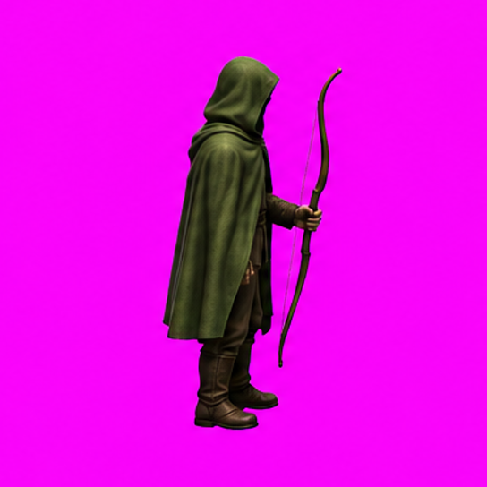

Comparación con la misma referencia, seed y parámetros. En la segunda prueba se pide explícitamente una cámara isométrica elevada y fija.
GIF de la segunda prueba · Descargar video · Prompt y parámetros
